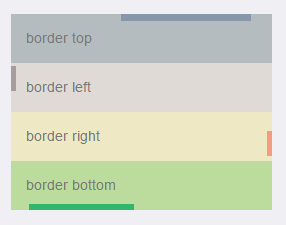

以前需要边框长度比容器小一些时，我用div嵌套。后来发现伪类在实现这个效果时很方便，只需要一个div就够了，另外调整padding和margin都不会很麻烦。
<div class="content-block">
<div class="box-container">
<div class="border-top">border top</div>
</div>
<div class="box-container">
<div class="border-left">border left</div>
</div>
<div class="box-container">
<div class="border-right">border right</div>
</div>
<div class="box-container">
<div class="border-bottom">border bottom</div>
</div>
</div>.box-container {
position: relative;
width: 90%;
color: #777;
}
.border-top {
background: #b4bcbf;
padding: 15px;
}
.border-top:before {
content: '';
position: absolute;
left: 42%;
top: 0;
bottom: auto;
right: auto;
height: 7px;
width: 50%;
background-color: #8796a9;
}
.border-left {
background: #dfdad6;
padding: 15px;
}
.border-left:before {
content: '';
position: absolute;
left: 0;
top: 6%;
bottom: auto;
right: auto;
height: 52%;
width: 5px;
background-color: #a89d9e;
}
.border-right {
background: #eee9c4;
padding: 15px;
}
.border-right:after {
content: '';
position: absolute;
left: auto;
top: auto;
bottom: 5px;
right: 0;
height: 52%;
width: 5px;
background-color: #f39c81;
}
.border-bottom {
background: #bcdc9d;
padding: 15px;
}
.border-bottom:after {
content: '';
position: absolute;
left: 18px;
top: auto;
bottom: 0;
right: auto;
height: 6px;
width: 105px;
background-color: #32b66b;
}效果如下图：

相信很多人在刚接触前端或者中期时候总会遇到一些问题及瓶颈期，如学了一段时间没有方向感或者坚持不下去一个人学习枯燥乏味有问题也不知道怎么解决，对此我整理了一些资料 喜欢我的文章想与更多资深大牛一起讨论和学习的话 欢迎加入我的学习交流群907694362